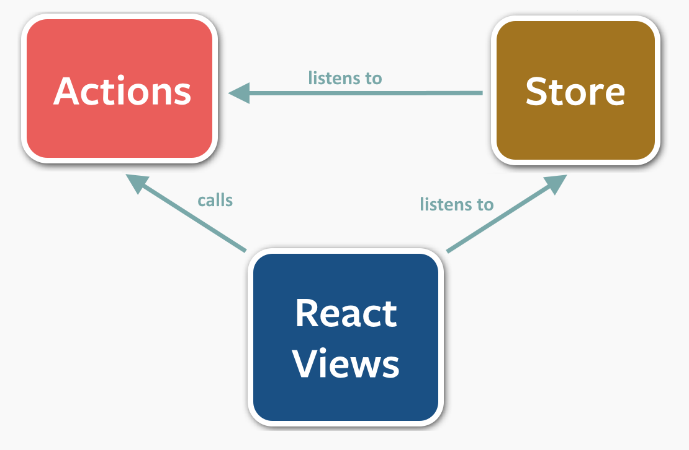
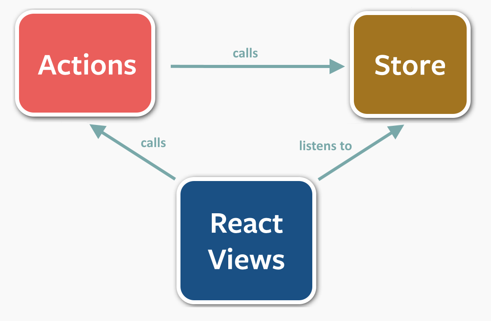

React
De l’outil à la solution
Présenté par
Samuel Bouchet et Thomas de Tugny
Introduction
Plan
- L’outil
- Gérer ses données
- Isomorphisme
- Workflow
React : l’outil
Objectifs
Concepts clés
Jsx et aperçu du code source
https://facebook.github.io/react/jsx-compiler.htmlReact : Gérer ses données
Flux

source : http://fluxxor.com/what-is-flux.html
Flux

Reflux
pas de framework
Orienter son modèle de données pour les performances
React : Isomorphisme
Avantages du rendu côté serveur
- Accessibilité
- Référencement
- Performances
Avantages de l’isomorphisme
- DRY
- Cohérence
- Prédiction optimiste
Démonstration
https://github.com/Lythom/react-demos/React : Workflow technique
Languages (avec jsx)
- Javascript (E6 with babel)
- Coffee
- TypeScript
Outils de compilation / bundling
- Grunt
- Gulp
- Brunch
- RequireJS
- Browserify
- Webpack
Editeurs
- Sublime
- WebStorm
- Atom
- Brackets
- vim
Autres outils / libs
- Routage
- Gestionnaires de données
- Data Fetching (communication client/server)
- Composants UI prêts à l'emploi
Tous les outils complémentaires sur https://github.com/facebook/react/wiki/Complementary-Tools
React : Workflow humain
- Un niveau de transformation supplémentaire sur un modèle classique :
Intégration <-> Dev front <-> Dev Back - Bye bye JQuery